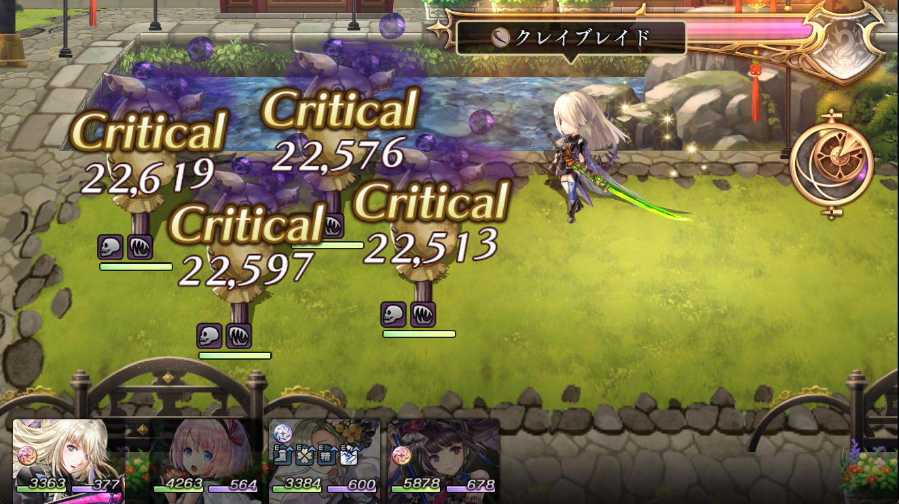
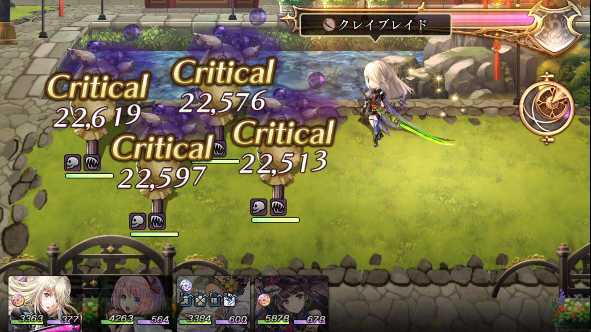
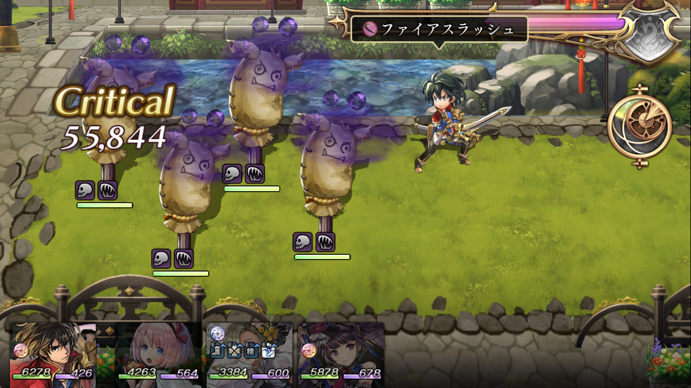
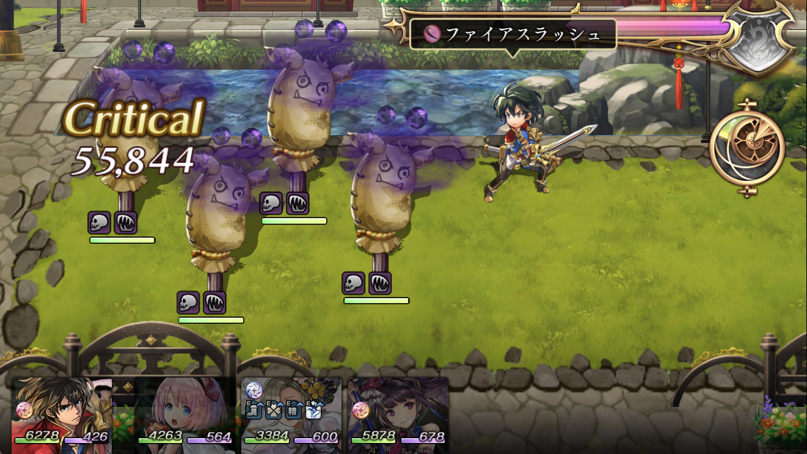
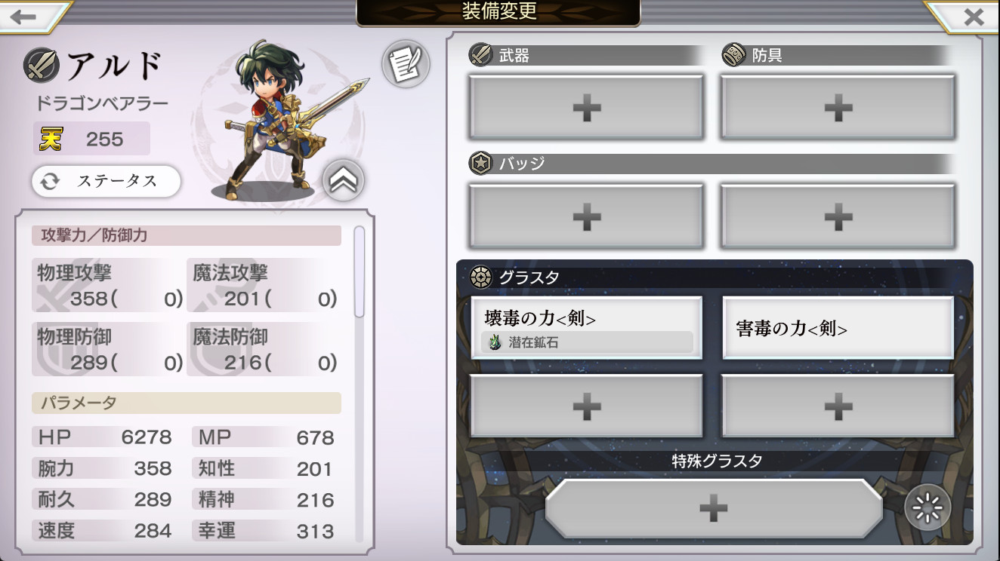

毒ペグラスタを入れ替えると出現するダメージが変わる。 つまり毒ペのダメージは毒ペ枠内での乗算ではなくそれぞれ独立して処理されている。そしてその処理の度に小数点以下切り捨てが行われる。
また、これのせいで先人が検証した処理順が一部再確認が必要であると考える。え、やだ……。
 



検証条件
- 攻撃腕力358 魔力知性201
- ファイアスラッシュ 単体1.4倍 火斬
- 確定クリティカル
- 潜在錬成壊毒（35%）と害毒（30%）を入れ替えて確認する
| ダメージ | 拾えていないダメージ （害毒壊毒） |
拾えていないダメージ （壊毒害毒） |
|
|---|---|---|---|
| 害毒壊毒で出現ダメージ |
55844, 55997, 56184, 56261, 56411, 56487, 56525, 56563, 56865, 56940 |
||
| 壊毒害毒で出現ダメージ |
55882, 55919, 56147, 56184, 56223, 56261, 56299, 56411, 56449, 56752, 56978, 57016 |
||
| 害毒壊毒（x1.3x1.35）の計算ダメージ |
55844, 55883, 55919, 55959, 55997, 56032, 56071, 56108, 56147, 56184, 56223, 56261, 56296, 56335, 56372, 56411, 56449, 56487, 56525, 56563, 56601, 56637, 56676, 56714, 56751, 56790, 56827, 56865, 56901, 56940, 56978, 57016 |
55882, 56299, 56752 |
|
| 壊毒害毒（x1.35x1.3）の計算ダメージ |
55843, 55882, 55919, 55958, 55996, 56034, 56072, 56108, 56147, 56184, 56223, 56261, 56299, 56337, 56372, 56411, 56449, 56487, 56525, 56563, 56601, 56637, 56676, 56714, 56752, 56790, 56826, 56864, 56901, 56940, 56978, 57016 |
55844, 55997, 56865 |